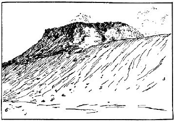
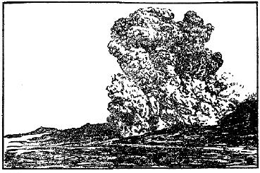

| 火山の話 | |
| 今村 明恒 | |
| (2012) | |
火山の話
今村明恒
一、はしがき
わが日本
は地震
の國
といはれてゐる。また火山
の國
ともいはれてゐる。地震
や火山
が多
いからとて御國自慢
にもなるまいし、強
い地震
や激
しい噴火
が度々
あるからとて、外國
に誇
るにも當
るまい。實際
この頃
のように地震
、火災
、噴火
などに惱
まされつゞきでは、却
つて恥
かしい感
じも起
るのである。たゞわれ〳〵日本人
としてはかような天災
に屈
することなく、寧
ろ人力
を以
てその災禍
をないようにしたいものである。かくするには地震
や火山
の何物
であるかを究
めることが第一
である。所謂
敵情偵察
である。敵情
が悉
くわかつたならば、災禍
をひき起
すところのかの暴力
を打
ち碎
くことも出來
よう。この目的
を達
してこそわれ〳〵は他國人
に對
して恥
かしいといふ感
じから始
めて免
れ得
られるであらう。
火山
や地震
は強敵
である。強敵
を見
て恐
れずとは戰爭
だけに必要
な格言
でもあるまい。昔
の人
はこれらの自然現象
を可
なり恐
れたものである。火山
の噴火
鳴動
を神業
と考
へたのは日本
ばかりではないが、特
に日本
においてはそれが可
なり徹底
してゐる。まづ第一
に、噴火口
を神
の住
み給
へる靈場
と心得
たことである。例
へば阿蘇山
の活動
の中心
たる中岳
は南北
に長
い噴火口
を有
し、通常
熱湯
を湛
へてゐるが、これが數箇
に區分
せられてゐるので北
の池
を阿蘇
の開祖
と稱
へられてゐる建磐龍命
の靈場
とし、中
の池
、南
の池
を、それ〴〵奧方
の阿蘇津妃命
、長子
たる速瓶玉命
の靈場
と考
へられてあつた。丁度
イタリーの南方
リパリ群島中
の一火山島
たるヴルカーノ島
をローマの鍛冶
の神
たるヴルカーノの工場
と考
へたのと同樣
である。更
に日本
では、火山
の主
が靈場
を俗界
に穢
されることを厭
はせ給
ふがため、其處
を潔
める目的
を以
て時々
爆發
を起
し、或
は鳴動
によつて神怒
のほどを知
らしめ給
ふとしたものである。それ故
にこれ等
の異變
がある度
に、奉幣使
を遣
して祭祀
を行
ひ、或
は神田
を寄進
し、或
は位階
勳等
を進
めて神慮
を宥
め奉
るのが、朝廷
の慣例
であつた。例
へば阿蘇
の建磐龍命
は正二位勳五等
にのぼり、阿蘇津妃命
は正四位下
に進
められたが如
きである。
天台宗
の寺院
は、高地
に多
く設
けてあるが、火山
もまた彼等
の選
に漏
れなかつた。隨
つて珍
しい火山現象
の、これ等
の僧侶
によつて觀察
せられた例
も少
くない。阿蘇
の靈地
からは火
の玉
が三
つ飛
び出
たともいひ、また性空上人
は霧島
の頂上
に參籠
して神體
を見屆
けたといふ。それによれば周圍
三丈
、長
さ十餘丈
、角
は枯木
の如
く、眼
は日月
の如
き大蛇
なりきと。鳥海
又
は阿蘇
の噴火
に大蛇
が屢
現
れるのも、迷信
から起
つた幻影
に外
ならないのである。ハワイ島
の火山
キラウエアからは女神
ペレーの涙
や毛髮
が採集
せられ、鳥海山
は石
の矢尻
を噴出
したといはれてゐる。神話
にある八股
の大蛇
の如
きも亦
噴火
に關係
あるものかも知
れぬ。
火山 に關 する迷信 がこのように國民 の腦裡 を支配 してゐる間 、學問 が全 く進歩 しなかつたのは當然 である。昔 の雷公 が今日 我々 の忠實 な使役 をなすのに、火山 の神 のみ頑固 におはすべきはずがない。火山地方 の地下熱 の利用 などもあることだから、使 ひ樣 によつては人生 に利益 を與 へる時代 もやがて到着 するであらう。
二、火山 のあらまし
わが日本
には火山
は珍
しくないから、他國
に於
ても一兩日
の行程内
に火山
のない所
はあるまいなどと思
はれるかも知
れないが、實際
はさういふ風
になつてゐない。例
へば現在
活動中
の火山
は南北
アメリカ洲
では西
の方
の太平洋沿岸
だけに一列
に竝
んでをり、中部
アメリカ地方
では二條
になつて右
の南北線
につながつてゐる。大體
太平洋沿岸地方
は火山
の列
を以
て連絡
を取
つてゐるので、わが國
の火山列
も、千島
、アレウト群島
を經
てアメリカの火山列
につながつてゐるのである。その他
歐洲
にはイタリーに四箇
、ギリシヤに一箇
有名
な活火山
があり、その外
にはイスランドに數箇
あるきりで、北米
の東部
、或
は歐洲
の北部
にゐる人
には、火山現象
を目撃
することが容易
でない。太平洋
の中央部
、特
にハワイ島
にはキラウエアといふ有名
な活火山
があるが、活火山
に最
も豐富
な場所
はジャワ島
である。こゝには活火山
だけの數
が四十箇
も數
へられるといはれてゐる。わが國
も活火山
には可
なり富
んでゐるけれども、ジャワには及
ぶべくもない。
試
みに世界
に於
て名
ある活火山
を擧
げてみるならば、南米
エクワドル國
に於
るコトパクシ（高
さ五千九百四十三米
）は、圓錐形
の偉大
な山
であるが、噴火
の勢力
も亦
偉大
で、鎔岩
の破片
を六里
の遠距離
に噴
き飛
ばしたといふ、この點
に就
ての記録保持者
である。又
その噴火
の頻々
な點
に於
ても有名
である。
西
インドの小
アンチル群島中
にあるマルチニック島
の火山
プレー（高
さ［＃「高
さ」は底本では「高
き」］
千三百五十米
）は、その西暦
千九百二年
五月八日
の噴火
に於
て、赤熱
した噴出物
を以
て山麓
にある小都會
サンピール市
を襲
ひ、二萬六千
の人口中
、地下室
に監禁
されてゐた一名
の囚徒
を除
く外
、擧
つて死滅
したことに於
て有名
である。ヴェスヴィオ噴火
によるポムペイ全滅
の慘事
に勝
るとも劣
ることなきほどの出來事
であつた。この時
噴火口内
に出現
した高
さ二百米
の鎔岩塔
も珍
しいものであつたが、それは噴火
の末期
に於
て次第
に崩壞
消失
してしまつた。
ハワイのキラウエア火山
（高
さ千二百三十五米
）は、ハワイ島
の主峯
マウナ・ロア火山
の側面
に寄生
してゐるものであるが、通常
の場合
、その噴火口
に鎔岩
を充
たし、しかもこの鎔岩
が流動
して種々
の奇觀
を呈
するので、觀光客
を絶
えずひきつけてゐる。火山毛
はその産物
として最
も有名
である。山上
に有名
な火山觀測所
がある。又
觀光客
のために開
いた旅館
もあり、ハワイ島
の船着場
ヒロからこゝまで四里
の間
、自動車
にて面白
い旅行
も出來
る。
Ⅸキラウヱア火山
マウナ・ロアは四千百九十四米
の高
さを有
つてをり、わが國
の富士山
よりも四百米以上
高
いから、讀者
はその山容
として富士形
の圓錐形
を想像
せられるであらうが、實
は左
にあらず、寧
ろ正月
の御備餅
に近
い形
をしてゐる。或
は饅頭形
とでも名
づくべきであらうか。山側
の傾斜
は僅
に六度
乃至
八度
に過
ぎない。これはその山體
を作
つてゐる岩石
（玄武岩
）の性質
に因
るものであつて、その鎔
けてゐる際
は比較的
に流動
し易
いからである。昭和二年
、大噴火
をなしたときも噴火口
から流
れ出
る鎔岩
が、恰
も溪水
の流
れのように一瀉千里
の勢
を以
て駈
け下
つたのである。尤
も山麓
に近
づくに從
ひ、温度
も下
り遂
には暗黒
な固體
となつて速
さも鈍
つたけれども。
Ⅸ火山毛（キラウヱア火山）
スマトラとジャワとの間
、スンダ海峽
にクラカトアといふ直徑
二里程
の小島
があつた。これが西暦
千八百八十三年
に大爆裂
をなして、島
の大半
を噴
き飛
ばし、跡
には高
さ僅
に八百十六米
の小火山島
を殘
したのみである。この時
に起
つた大氣
の波動
は世界
を三週半
する迄
追跡
し得
られ、海水
の動搖
は津浪
として全地球上
殆
んど到
る處
で觀測
せられた。また大氣中
に混入
した灰塵
は太陽
を赤色
に見
せること數週間
に及
んだ。實
に著者
の如
きも日本
に於
てこの現象
を目撃
した一人
である。
Ⅸマウナ・ロア（ハワイ島）
ジャワ島
のパパンダヤング火山
は西暦
千七百七十二年
の噴火
に於
て、僅
に一夜
の間
に二千七百米
の高
さから千五百米
に減
じ、噴
き飛
ばしたものによつて四十箇村
を埋沒
したといふ。恐
らくはこれが有史以來
の最
も激烈
な噴火
であつたらう。
イタリーで最
も著名
な火山
はヴェスヴィオ（高
さ千二百二十三米
）であるが、これが世界的
にもまた著名
であるのは、西暦
紀元七十九年
の大噴火
に於
て、ポムペイ市
を降灰
にて埋沒
したこと、有名
な大都市
ナポリに接近
してゐるため見學
に便利
なこと、凡
そ三十年位
にて活動
の一循環
をなし、噴火現象
多種多樣
にて研究材料
豐富
なること、登山鐵道
、火山觀測所
、旅館
の設備
完全
せる等
に因
るものである。著者
が七年前
に見
たときは、つぎの大噴火
は、或
は十年
以内
ならんかとの意見
が多
かつたが、この年
の九月三十日
に見
たときは、大噴火
の時機
切迫
してゐるように思
はれた。或
は數年内
に大爆發
をなすことがないとも限
らぬ。
イタリーの地形
は長靴
のようだとよくいはれてゐることであるが、その爪先
に石
ころのようにシシリー島
が横
たはつてをり、爪先
から砂
を蹴飛
ばしたようにリパリ火山群島
がある。其中
活火山
はストロムボリ（高
さ九百二十六米
）とヴルカーノ（高
さ四百九十九米
）との二箇
であるが、前者
は有史以來
未
だ一日
も活動
を休止
したことがないといふので有名
であり、後者
は前
にも記
した通
り、火山
なる外國語
の起原
となつたくらゐである。この外
イタリーにはシシリー島
にエトナ火山
（高
さ三千二百七十四米
）があり、以上
イタリーの四火山
、いづれもわが日本郵船會社
の航路
に當
つてゐるので、甲板上
から望見
するには頗
る好都合
である。もし往航
ならば先
づ左舷
の彼方
にエトナが高
く屹立
してゐるのを見
るべく、六七合目以上
は無疵
の圓錐形
をしてゐるので富士
を思
ひ出
すくらゐであるが、それ以下
には二百以上
の寄生火山
が簇立
してゐるので鋸齒状
の輪廊
が［＃「輪廊
が」はママ］
見
られる。この山
は平均
十年毎
に一回
ぐらゐ爆發
し、山側
に生
ずる裂
け目
の彼方此方
を中心
として鎔岩
を流
し、或
は噴出物
によつて小圓錐形
の寄生火山
を形作
るなどする、つぎに郵船
がメシナ海峽
を通過
すると、遙
か左舷
に鋸山式
のヴルカーノが見
える。更
に進
むと航海者
には地中海
の燈臺
と呼
ばれ、漁獵者
には島
の晴雨計
と名
づけられてゐるストロムボリが見
える。この火山島
は直徑
僅
に三粁
の小圓錐
であつて、その北側
に人口
二千五百
の町
があり、北西
八合目
に噴火口
がある。火孔
は三箇
竝立
して鎔岩
を湛
へ、數分間
おきに之
を噴
き飛
ばしてゐる。もしそこを通過
するのが夜
であるならば、吹
き飛
ばされた赤熱鎔岩
が斜面
を流
れ下
つて、或
は途中
で止
まり、或
は海中
まで進入
するのが見
られるが、日中
ならば斜面
を流下
する鎔岩
が水蒸氣
の尾
を曳
くので、これによつてそれと氣
づかれるのみである。この火山
の噴出時
に於
ける閃光
は遠
く百海里
を照
らすので、そこでストロムボリが地中海
の燈臺
と呼
ばれる所以
である。かくてこれ等
の展望
をほしいまゝにしたわが郵船
はナポリ港
に到着
し、ヴェスヴィオを十分
に見學
し得
る機會
も捉
へられるのである。先
づ頂上
から絶
えず噴
き出
す蒸氣
や火山灰
によつて直
ぐにそれがヴェスヴィオなることが氣
づかれるが、それと同時
に今一
つ左方
に竝立
して見
える尖
つた山
を見落
してはならぬ。山名
はソムマといはれてゐるが、これがソムマ即
ち外輪山
といふ外國語
の起
りである。地圖
で見
るソムマはヴェスヴィオを半
ば抱擁
した形
をしてゐる。即
ち不完全
な外輪山
であつて、もしそれが完全
ならば中央
にある圓錐状
の火山
を全部
抱擁
する形
になるのである。ヴェスヴィオは西暦
七十九年
の大噴火前
までは、このソムマの外側
を引
き伸
したほどの一箇
の偉大
な圓錐状
の火山
であつたのが、あのをりの大噴火
のために東南側
の大半
を吹
き飛
ばし、その中央
に現在
のヴェスヴィオを中央火口丘
として殘
したものと想像
されてゐる。ポムペイの遺跡
は山
の中央
から南東
九粁
の遠距離
にあるが、これはその時
降
りつづいた降灰
によつて全部
埋沒
せられ、その後
幾百年
の間
その所在地
が見失
はれてゐたが、西暦
千七百四十八年
一農夫
の偶然
な發見
により遂
に今日
のように殆
んど全部
發掘
されることになつたのである。ポムペイの滅
びた原因
が降灰
にあることは、空中
から見
た寫眞
でもわかる通
り、各家屋
の屋根
は全部
拔
けてゐて、四壁
が完備
してゐることによつてもわかるが、西暦
千九百六年
の大噴火
のとき、僅
に三十分間
同方向
に降
り續
いた火山灰
が、山
の北東
にあるオッタヤーノの町
に九十糎
も積
り、多
くの屋根
を打
ち拔
いて二百二十人
の死人
を生
じたことによつても、うなづかれるであらう。かういふ風
の家屋被害
と、放射
された噴出物
によつて破壞
せられたサンピール市街
の零落
とは著
しい對象
である［＃「對象である」はママ］
。もし昨日
まで繁昌
したサンピールの舊市街
零落
した跡
を噴出物流動
の方向
から眺
むれば、殘
つた壁
が枯木林
のように見
え、それに直角
の方向
から見
ると壁
の正面整列
が見
られたといふ。
Ⅸヴェスヴィオ火山の遠景
Ⅸヴェスヴィオ火山平面圖
Ⅸポムペイ鳥瞰圖
ヴェスヴィオに登山
した人
は、通常
火口内
には暗黒
に見
える鎔岩
の平地
を見出
すであらう。これは絶
えず蒸氣
、火山灰
、鎔岩
等
を噴
き出
す中央
の小丘
から溢
れ出
たものであつて、かゝる平地
を火口原
と名
づけ、外輪山
に對
する中央
の火山
を中央火口丘
と名
づける。わが富士山
の如
く外輪山
を持
たない火山
は單式
であるが、ヴェスヴィオの如
く外輪山
を有
するものは複式
である。
われ〳〵はこれまで海外
の著名
な火山
を一巡
して來
た。これから國内
にて有名
な活火山
を一巡
して見
たい。
有史以前
には噴火
した證跡
を有
しながら、有史以來
一回
も噴火
したことのない火山
の數
はなか〳〵多
い。箱根山
の如
きがその一例
である。われ〳〵はこの種
の火山
を死火山
或
は舊火山
と名
づけて、有史以來
噴火
した歴史
を有
つてゐる活火山
と區別
してゐる。但
しわれ〳〵の歴史
は火山
の壽命
に比較
すれば極
めて短
い時間
であるから、現在
死火山
と思
はれてゐるものも、數百年
或
は數千年
の休息状態
をつゞけた後
、突然
活動
を開始
するものがないとも限
らぬ。これは文化
が開
けてから餘
り多
くの年數
を經
ない場所
、例
へば北海道
などの死火山
にはあり得
べきことである。
Ⅸ日本火山分布
歴史年代
に噴火
した實例
を有
つてゐながら、現在
噴火
を休止
してゐるものと、活動中
のものとあるが、前者
を休火山
と名
づけて活火山
と區別
してゐる人
もあるけれども、本篇
に於
ては全部
これを活火山
と名
づけて必要
のあつた場合
に休活
の區別
をなすことにする。唯
こゝに斷
りを要
することは噴火
といふ言葉
の使
ひ方
である。文字
からいへば火
を噴
くとなるけれども、これは燃
える火
を指
すのではない。勿論
極
めて稀
な場合
には噴出
せられた瓦斯
が燃
えることがないでもないが、一般
に火
と思
はれてゐるのは赤熱
した鎔岩
である。但
しこれが赤熱
してゐなくとも噴火
たることに變
りはない。例
へば粉末
となつた鎔岩
、即
ち火山灰
のみを噴
き出
す時
でもさうである。然
しながら單
に蒸氣
、瓦斯
又
は硫氣
を噴出
するだけでは噴火
とはいはないで、蒸氣孔
又
は硫氣孔
の状態
にありといつてゐる。箱根山
は形
からいへば複式火山
、經歴
からいへば死火山
、外輪山
は金時
、明神
、明星
、鞍掛
、三國
の諸山
、中央火口丘
は冠岳
、駒ヶ岳
、二子山
、神山
等
、さうして最後
の活動場所
が大涌谷
であつて、こゝには今
なほ蒸氣孔
、硫氣孔
が殘
つてゐる。
日本
に於
ける活火山
の兩大關
、東
の方
を淺間山
とすれば、西
は阿蘇山
である。中
にも阿蘇
はその外輪山
の雄大
なことに於
て世界第一
といはれてゐる。即
ちその直徑
は東西
四里
南北
五里
に及
び、こゝに阿蘇
一郡
四萬
の人
が住
まつてゐる。但
し噴火
はこの火口
全體
から起
つたのではなく、周圍
の土地
の陷沒
によつて斯
く擴
がつたものだといふ。この廣
き外輪山
の中
に幾
つかの中央火口丘
があるが、それが所謂
阿蘇
の五岳
である。これ等
は重
に東西線
と南北線
とに竝列
してゐるが、中央
の交叉點
に當
る場所
に現在
の活火口
たる中岳
（高
さ千六百四十米
）がある。この中岳
の火口
は前
に記
した通
り、南北
に連續
した數箇
の池
から成立
ち、重
なものとして、北中南
の三
つを區別
する。阿蘇
はこの百年
ぐらゐの間
、平均
十一年目
に活動
を繰返
してゐるが、それはその三
つの池
のいづれかゞ活氣
を呈
するに因
るものである。然
しながら、稀
には外
の場所
から噴
き出
すこともある。火口
の池
が休息
の状態
にある時
は、大抵
濁水
を湛
へてゐるが、これが硫黄
を含
むために乳白色
ともなれば、熱湯
となることもある。活動
に先
んじて池水
涸渇
するのが通常
であるけれども、突然
爆發
して池水
を氾濫
せしめたこともある。このために阿蘇郡
の南半
たる南郷谷
の水
を集
めて流
れる白川
が文字通
り乳白色
となり、魚介
を死滅
せしめることがある。北方
阿蘇谷
の水
は黒川
に集
り、兩方
相會
する所
で外輪山
を破
り外方
に流
れ出
る。即
ちこの外輪山
の破
れ目
が火口瀬
である。箱根山
でこれに相當
する場所
は湯本
の早川
と須雲川
の相會
する所
である。阿蘇
の活動
は右
の外
、一般
に火山灰
を飛
ばし、これが酸性
を帶
びてゐるので、農作物
を害
し、これを食
する牛馬
をも傷
めることがある。阿蘇
の火山灰
はこの地方
で『よな』と稱
へられてゐるが、被害
は單
に阿蘇
のみに止
まらずして、大分縣
にまでも及
ぶことがある。これは空氣
の上層
には通常
西風
があるので、下層
の風向
きの如何
に拘
らず、細
かな火山灰
は大抵
大氣中
の上層
に入
り、東方
に運
ばれるに因
るからである。
Ⅸ阿蘇火口の平面圖
阿蘇
は日本
の活火山中
、最
も登
り易
い山
であらう。國有鐵道
宮地線
の坊中驛
又
は宮地驛
から緩勾配
の斜面
を登
ること一里半
ぐらゐで山頂
へ達
することが出來
る。頂上
近
くに茶店
、宿屋
數軒
あり、冬季
でも登攀
不可能
でない。但
しある意味
に於
ける世界第一
のこの火山
に於
て一
の觀測所
をも有
しないことは、外國
の學者
に對
しても恥
かしく思
つてゐたが、今
は京都帝國大學
の觀測所
がこゝに設立
されてゐる。
つぎは東
の大關
たる淺間山
（高
さ二千五百四十二米
、單式火山
）を覗
いて見
ることにする。この山
も阿蘇
同樣
に噴火
の記録
も古
く、回數
も頗
る多
いが、阿蘇
の噴火
のだら〳〵として女性的
なるに對
し、これは男性的
であるといつても然
るべきである。休息
の間隔
は比較的
に遠
いが、一度
活動
を始
めるとなか〳〵激
しいことをやる。現
に明治四十一年頃
から始
まつた活動
に於
ては鎔岩
を西方
數十町
の距離
にまで吹
き飛
ばし、小諸
からの登山口
、七合目
にある火山觀測所
にまで達
したこともある。特
に天明三年
（西暦
千七百八十三年
）の噴火
は激烈
であつて、現在
鬼押出
しと名
づけてゐる鎔岩流
を出
したのみならず、熱泥流
を火口壁
の最
も低
い場所
から一時
に多量
に溢
れさせ、北方
上野
の國
吾妻川
に沿
うて百數十村
を埋
め、千二百人
の死者
を生
ぜしめた。最初
の活動
に於
ては火口内
の鎔岩
が、火口壁
の縁
まで進
み、一時
流出
を氣遣
れたけれども、つひにそのことなくして、鎔岩
の水準
が再
び低下
してしまつたのである。
Ⅸ淺間の噴火（菜花煙）
このついでに記
して置
きたいのは、飛驒
信濃
の國境
にある硫黄嶽
、一名
燒岳
（高
さ二千四百五十八米
）である。この山
は近時
淺間山
と交代
に活動
する傾
きを有
つてゐるが、降灰
のために時々
災害
を桑園
に及
ぼし、養蠶上
の損害
を被
らしめるので、土地
の人
に迷惑
がられてゐる。
近頃
の噴火
で最
もよく記憶
せられてゐるのは櫻島
（高
さ一千六十米
）であらう。その大正十二年
の噴火
に於
ては、山
の東側
と西側
とに東西
に走
る二條
の裂目
を生
じ、各線上
五六
の點
から鎔岩
を流出
した。この状態
はエトナ式
と稱
すべきである。但
し櫻島
はかういふ大噴火
を百年
或
は二三百年
の間隔
を以
て繰返
すので、隨
つて鎔岩
の流出量
も多
く、前回
の場合
は一
・六
立方粁
と計算
せられてゐるが、エトナは西暦
千八百九年
乃至
千九百十一年
の十回
に於
て合計
〇・六一立方粁
しか出
してゐない。かくて櫻島
は毎回
多量
の鎔岩
を出
すので島
の大
きさも次第
に増
して行
くが、今回
は東側
に出
た鎔岩
が遂
に瀬戸海峽
を埋
め、櫻島
をして大隅
の一半島
たらしめるに至
つた。かうして鎔岩
に荒
された損害
も大
きいが、それよりも火山灰
のために荒廢
した土地
の損害
、地盤沈下
によつて失
はれた附近
の水田
或
は鹽田
の損害
はそれ以上
であつて、鹿兒島縣下
に於
ける全被害
千六百萬圓
と計上
せられた。
櫻島噴火
は著
しい前徴
を備
へてゐた。數日前
から地震
が頻々
に起
ることは慣例
であるが、今回
も一日半前
から始
まつた。又
七八十年前
から土地
が次第
に隆起
しつゝあつたが、噴火後
は元
どほりに沈下
したのである。その外
温泉
、冷泉
がその温度
を高
め、或
は湧出量
を増
し、或
は新
たに湧出
し始
めたようなこともあつた。
霧島火山群
は東西
五里
に亙
り二
つの活火口
と多
くの死火山
とを有
してゐる。その二
つの活火口
とは矛
の峯
（高
さ千七百米
）の西腹
にある御鉢
と、その一里
ほど西
にある新燃鉢
とである。霧島火山
はこの二
つの活火口
で交互
に活動
するのが習慣
のように見
えるが、最近
までは御鉢
が活動
してゐた。但
し享保元年
（西暦
千七百十六年
）に於
ける新燃鉢
の噴火
は、霧島噴火史上
に於
て最
も激
しく、隨
つて最高
の損害記録
を與
へたものであつた。
磐梯山
（高
さ千八百十九米
）の明治二十一年
六月十五日
に於
ける大爆發
は、當時
天下
の耳目
を聳動
せしめたものであつたが、クラカトアには比較
すべくもない。この時
に磐梯山
の大部分
は蒸氣
の膨脹力
によつて吹
き飛
ばされ、堆積物
が溪水
を塞
いで二三
の湖水
を作
つたが、東側
に流
れ出
した泥流
のために土地
のみならず、四百餘
の村民
をも埋
めてしまつたのである。

Ⅸ磐梯山の爆發（平面竝に斷面圖）
肥前
の温泉岳
（高
さ千三百六十米
）は時々
小規模
の噴火
をなし、少量
の鎔岩
をも流出
［＃ルビの「りゆうしゆつ」は底本では「ゆりうしゆつ」］
することがあるが、寛政四年
四月一日
（西暦
千七百九十二年
五月二十一日
）噴火
の場所
から一里程
も離
れてゐる眉山
の崩壞
を、右
の磐梯山
の爆發
と同
じ現象
のように誤解
してゐる人
がある。この崩壞
の結果
、有明灣
に大津浪
を起
し、沿岸地方
に於
て合計
一萬五千人
ほどの死者
を生
じた大事件
［＃ルビの「だんじけん」はママ］
もあつたので、原因
を輕々
しく斷定
することは愼
まねばならぬ。磐梯山破裂
の跡
には大
きな蒸氣孔
を殘
し、火山作用
は今
もなほ盛
んであるが、眉山
の場合
には毫
も右樣
の痕跡
を止
めなかつたのである。
磐梯山
に近
く吾妻山
又
の名
一切經山
（高
さ千九百四十九米
）がある。この山
が活火山
であることは明治二十六年
に至
るまで知
られなかつたが、この年
突然
噴火
を始
めたゝめ死火山
でなかつたことが證據立
てられた。この際
調査
に向
つた農商務技師
三浦宗次郎氏
と同技手
西山省吾氏
が噴火
の犧牲
になつた。少年讀者
は東京
上野
の博物館
に收
めてある血染
めの帽子
と上着
とを忘
れないようにされたいものである。
東北地方
の活火山
に鳥海山
（高
さ二千二百三十米
）、岩手山
（高
さ二千四十一米
）、岩木山
（高
さ千六百二十五米
）等
がある。いづれも富士形
の單式火山
であつて、歴史年代
に於
て餘
り活潑
でない噴火
を數回
乃至
十數回
繰返
した。享和年間
の鳥海噴火
と享保年間
の岩手噴火
とに於
ては、鎔岩
を流出
せしめたけれども、それも極
めて少量
であつて、山
の中腹
までも達
しないくらゐであつた。
大島
といふ名前
の火山島
か［＃「火山島か」はママ］
伊豆
と渡島
とにある。伊豆
の大島
の有
する火山
は三原山
（高
さ七百五十五米
）と名
づけられ、噴火
の古
い歴史
を有
してゐる。爆發
の力
頗
る輕微
であつて、活動中
に於
ても、中央火口丘
へ近
づくことが容易
である。渡島
の大島
も歴史年代
に數回
の噴火
を繰返
したが、兩者
共
に火山毛
を産
することは注意
すべきことである。但
しいづれも暗黒針状
のものである。
北海道
には本島
だけでも駒ヶ岳
（高
さ千百四十米
）、十勝岳
（高
さ二千七十七米
）、有珠山
（高
さ七百二十五米
）、樽前山
（高
さ一千二十三米
）の活火山
があつて、いづれも特色
ある噴火
をなすのである。その中
樽前
は明治四十二年
の噴火
に於
て、火口
からプレー式
の鎔岩丘
を押
し出
し、それが今
なほ存在
して時々
その彼方此方
を吹
き飛
ばす程
の小爆發
をつゞけてゐる。また有珠山
の明治四十三年
の噴火
は數日前
から地震
を先發
せしめたので、時
の室蘭警察署長
飯田警視
が爆發
を未然
に察
し、機宜
に適
する保安上
の手段
を取
つたことは特筆
すべき事柄
である。十勝岳
も近頃
まで死火山
と考
へられてゐた火山
の一
つであるが、大正十五年
突然
の噴火
をなし、雪融
［＃ルビの「ゆきど」は底本では「きゆど」］
けのため氾濫
を起
し、山麓
の［＃「山麓の」は底本では「山麗の」］
村落
生靈
を流亡
せしめたことは、人々
の記憶
になほ新
たなものがあるであらう。

Ⅸ樽前岳の鎔岩丘
わが國
の陸上
の火山
を巡見
するに當
つてどうしても省
くことの出來
ないのは、富士山
（高
さ三千七百七十八米
）であらう。この山
が琵琶湖
と共
に一夜
にして出來
たなどといふのは、科學
を知
らなかつた人
のこじつけであらうが、富士
が若
い火山
であることには間違
ひはない。古
くは貞觀年間
［＃ルビの「じようかんねんかん」はママ］
、近
くは寶永四年
にも噴火
して、火口
の下手
に堆積
した噴出物
で寶永山
を形作
つた。即
ち成長期
にあつた少女時代
の富士
も一人
の子持
ちになつたわけである。やがて多
くの子供
を持
ち複式火山
の形
ともなり、遂
には現在
の箱根山
の状態
になる時
も來
るであらう。
右
の外
、日本
の近海
に於
ては、時々
海底
の噴火
を認
めることがある。伊豆南方
の洋底
は航海中
の船舶
が水柱
を望見
し、或
は鳴動
に伴
つて黒煙
のあがるのを見
ることもあり、附近
の海面
に輕石
の浮
んでゐるのに出會
ふこともある。大正十三年
琉球諸島
の中
、西表島北方
［＃ルビの「いりむてとうほつぽう」はママ］
に於
ても同樣
の現象
を實見
したことがあつた。
以上 の通 り、われ〳〵は内外 の活火山 をざつと巡見 した。その互 の位置 を辿 つてみると一 つの線上 に竝 んでゐるようにも見 え、或 は雁 の行列 を見 るようなふうに竝 んでゐる場合 も見受 けられる。かういふ脈 が所謂 火山脈 であつて、最 も著名 な火山脈 が太平洋 の周圍 に横 たはつてゐる次第 である。かくして見 る時 、火山 の火熱 の原因 、或 は言葉 を換 へていへば、火山 から流出 する鎔岩 の前身 たる岩漿 が地下 に貯藏 せられてゐる場所 は、決 して深 いものではなく、地表下 一二里 或 は深 くて五六里以内 の邊 らしく想像 せられる。再 び火山脈 を辿 つてみると、それが地震 の起 る筋 、即 ち地震帶 と一致 し、或 は相 竝行 してゐる場合 が多 く認 められる。然 しながら火山脈 を伴 つてゐない地震帶 も多數 あることを忘 れてはならない。元來 地震 は地層 の破 れ目 、即 ち斷層線 に沿 うて起 るものが多數 であり、さうして地下 の岩漿 は右 の裂 け目 に沿 うて進出 することは、最 もあり得 べきことであるから、右 のように火山脈 と地震帶 の關係 が生 じたのであらう。
三、噴出物
噴火
によつて噴
き出
されるものゝ本體
は、第一
に鎔岩
であり、これが前身
たる岩漿
である。岩漿
は非常
な高
い熱
と壓力
との下
に極
めて多量
の水
を含有
することが出來
るから、外界
に現
れて來
た鎔岩
は多量
の蒸氣
を吐
くのである。この蒸氣
の擴
がる力
が火山
の爆發力
となるのである。それが火口
から盛
り上
つて出
る形状
は、西洋料理
に使
はれる菜
の花
に似
てゐるから菜花状
の雲
と呼
ばれる。これには鎔岩
の粉末
が加
はつてゐるから多少
暗黒色
に見
える。それが即
ち煙
と呼
ばれる以所
である［＃「以所である」はママ］
。かういふふうに噴出
が烈
しい時
は電氣
の火花
が現
れる。性空上人
が霧島火山
の神體
と認
めたものは以上
の現象
に相違
なからう。
鎔岩
は種々
の形體
となつて噴出
せられる。先
づ火山灰
の外
に、大小
の破片
が抛
げ出
される。もし鎔融状
のまゝのものが地上
に落
ちる際
、ある程度
に冷却
してゐたならば、空中旅行中
回轉運動
のために取
つた形
を維持
し、そのまゝ、つむ形
、鰹節形
、皿形樣
の火山彈
となり、また内部
から蒸氣
を吐
き出
すためぱん
形
のものとなるのである。
鎔岩
の大部分
は火口底
から次第
に火口壁
の上部
まで盛
り上
つて遂
に外側
に溢
れ出
るに至
ることがある。或
は外壁
の上部
に生
じた裂
け目
から出
ることもあり、又
側壁
を融
かしてそこから溢
れ出
ることもある。この流下
の際
なほ多量
の蒸氣
を吐
き出
しつゝあると、こーくす
のような粗面
の鎔岩
となるが、もし蒸氣
が大抵
吐
き出
されてしまつた後
ならば、表面
が多少
滑
かに固
まり、或
は繩
をなつたような形
ともなり、又
犀
の皮
を見
るように大
きな襞
を作
ることもある。ハワイ土人
はこれをパホエホエ式
と呼
んゐでゐる。こーくす
状
の鎔岩
は中央火口丘
から噴出
せられて、それ自身
の形體
を積
み上
げて行
くことが多
い。鎔岩
に無數
の泡末
が含
まれたものは輕石
或
はそれに類似
のものとなるのであるが、その小片
はらぴり
と名
づけられ、火山灰
と共
に遠方
にまで運
ばれる。
Ⅸ火山彈（伊豆大島）
火山毛
の成因
は一應
説明
を要
する。讀者
は化學
又
は物理學
の實驗
に於
て、硝子管
を融
かしながら急
に引
きちぎると、管
の端
が細
い絲
を引
くことを實驗
せられたことがあるであらう。ハワイの火山
のように海底
から盛
り上
つて出來
たものは、鎔融状態
に於
て比較的
に流動
し易
い性質
を持
つてゐることは、前
にも述
べた所
であるが、かういふ硝子質
の鎔岩
に對
してこれを跳
ね飛
ばすような力
が加
はると火山毛
が出來
るのである。歴史
のどこかに毛
を降
らした記事
があるが、その中
の或場合
は火山毛
であつたらしく思
はれる。寶暦九年
七月二十八日
弘前
に於
て西北方
遽
に曇
り灰
を降
らしたが、その中
には獸毛
の如
きものも含
まれてゐたといふ。これは渡島
大島
の噴火
に因
つたものである。ピソライトといふ雀
の卵
のようなものが、火山灰
の中
に轉
つてゐることがある。これは雨粒
が火山灰
の上
に轉
つて出來
たものに過
ぎないのである。火山
はまた泥
を噴出
することがある。ヴェスヴィオの山麓
にあつたシラキュラニウムの町
は泥流
のために埋
められたが、この頃
は開掘
せられてある。天明
の淺間噴火
に於
ける泥流
の被害
は前
に述
べた通
りである。
Ⅸこーくす状鎔岩
Ⅸ犀皮状鎔岩
火山 の噴出物 は固體 の他 に多 くの氣體 がある。水蒸氣 は勿論 、炭酸瓦斯 、水素 、鹽素 、硫黄 からなる各種 の瓦斯 があり、或 ものは燃 えて青 い光 を出 したともいはれてゐる。又 これ等 の瓦斯 の或物 は凝結 して種々 の鹽類 となつて沈積 してゐることがある。外國 の或 火山 からはヘリウム瓦斯 が採集 されたといはれてゐる。日本 に於 てもこれが研究 されたけれども未 だその實在 が認 められないようである。もしこれが成功 するならば、飛行船用 などとして極 めて有益 であり、火山 の利用 がこの點 に於 ても實現 することになるのであらう。
四、噴火 の模樣
ストロムボリのようにかつて活動
を休止
したことのない火山
や磐梯山
の如
く極
めて稀
に、しかし突然
な爆發
をなす火山
は特別
として、一般
の活火山
は、間歇的
に活動
するのが原則
である。即
ち一時
活動
した後
は、暫時
休息
して、或
は硫氣孔
の状態
となり、或
は噴氣孔
となり、或
はそのような噴氣
も全
くなくなることがある。その休息時間
の長短
、或
は休眠
から覺
めたときの活動
ぶりにも各火山
にめい〳〵の特色
があつて、一概
にはいへないが、平均期間
よりも長
く休止
した後
の噴火
は平均
の場合
よりも強
く、反對
に短
く休息
した後
の場合
は噴火
が比較的
に弱
い。また平均
よりも大
きな噴火
をなした後
は休息期
が長
く、反對
に小
さな噴火
をなした後
は休息期
が短
い。
活火山
が新
たに活動
を開始
しようとする時
、何等
かの前兆
を伴
ふ場合
がある。土地
が噴火前
に次第
に隆起
したことは、大正三年
の櫻島噴火
に於
て始
めて氣
づかれた事實
である。恐
らくは大抵
の場合
に於
てさうなのであらう。噴火後
の實測
によつて一般
に土地
が次第
に下
つて行
くことは既
に多
くの場合
に證據立
てられたところである。讀者
は餅
を燒
かれるとき、これに類似
した現象
を觀察
されることがあるであらう。
噴火
の間際
になると、極
めて狹
い範圍
のみに感
ずる地震
、即
ち局部
の微震
が頻々
に起
ることが通常
である。地表近
くに進出
して來
た蒸氣
が、地表
を破
らうとする働
きのために起
るものであらう。地震計
を以
て觀察
すると、かういふ地下
の働
きの所在地
が分
るから、それからして岩漿
の貯藏
されてゐる場所
の深
さが想像
せられる。又
さういふ種類
の地震
と爆發
に伴
ふ地震
との區別
も、地震計
の記録
によつて明
らかにされるから、地震計
は噴火
の診斷器
となるわけである。
火山
は地震
の安全瓣
だといふ諺
がある。これには一面
の眞理
があるように思
ふ。勿論
事實
として火山地方
には決
して大地震
を起
さない。たとひ多少
強
い地震
を起
すことがあつても、それは中流以下
のものであつて、最大級
の程度
を遙
かに下
つたものである。前
に噴火
の前後
に地盤
の變動
が徐々
に起
ることを述
べた。最大級
の地震
ではかような地變
が急激
に起
るのである。火山地方
ではその程度
の地變
が緩漫
に起
るのであるから、それで火山
が地震
の安全瓣
となるわけであらう。
噴火前
には周圍
の土地
が餅
の燒
かれてふくらむような状態
になることは、既
に了解
せられたであらう。かような状態
にある土地
に於
て、從來
の温泉
は湧出量
が増
したり、隨
つて温度
も上
ることあるは當然
である。其他
新
たに温泉
や冷泉
が湧
き始
めることもあり、又
炭酸瓦斯
や其他
の瓦斯
を土地
の裂
け目
から出
して、鳥
の地獄
や蟲
の地獄
を作
ることもある。
前
に内外
の火山
を巡見
した場合
の記事
を掲
げて置
いたが、諸君
若
し兩方
を比較
せられたならば、國内
の火山作用
は概
して穩
かであつて、海外
の最
も激烈
なものに比較
すれば遙
かにそれ以下
であることを了解
せられるであらう。それで噴火
の珍現象
を收録
するには、勢
海外
の火山
に材料
を仰
がざるを得
なくなる。勿論
それには研究
の行屆
いてゐるのと、さうでないとの關係
も加
はつてゐる。
噴火
の前景氣
が愈
進
んで來
ると、火口
からの噴煙
が突然
勢
を増
して來
る。もし櫻島
のように四合目邊
りから裂
け目
を作
り始
め、そこから鎔岩
を流
す慣例
を持
つてゐるものならば、其
裂
け目
を完全
にするために、先
づ土砂
を吹
き飛
ばす等
の働
きをする。愈
噴火
が始
まると菜花状
の噴煙
に大小
種々
の鎔岩
を交
へて吹
き飛
ばし、それが場合
によつては數十町
にも達
することがある。この際
鎔岩
は水蒸氣
の尾
を曳
くことが目覺
ましい。又
菜花煙
の彼方此方
に電光
の閃
くのが見
られる。この際
の雷鳴
は噴火
の音
に葬
られてしまふが、これは單
に噴煙上
にて放電
するのみで、地上
に落雷
した例
がないといはれてゐる。或
は右
のような積極的動作
の代
りに、噴氣
或
は噴煙
が突然
やむような消極的
の前徴
を示
すものもあり、又
氣壓
の變動
特
に低壓
の際
に起
る癖
のあるものもあるから、活動中
或
は活動
に轉
じそうな火山
に登
るものは、この種
の火山特性
に注意
する必要
がある。
噴火
が突然
に起
ると、それが極
めて激烈
な空氣波動
を伴
ふことがある。火口近
くにゐてこの波動
に直面
したものは、空氣
の大
きな槌
を以
て擲
られたことになるので、巨大
な樹木
が見事
に折
れ、或
は根
こぎにされて遠方
へ運
ばれる。勿論
家屋
などは一溜
りもない。
噴煙
に加
はつて出
て來
る火山灰
やラピリは、噴火
の經過
に伴
つて、其形状
に於
ても内容
に於
ても色々
に變化
する。千九百六年
のヴェスヴィオ噴火
については、初日
から八日目
に至
るまでに噴出
した火山灰
を日々
の順序
に竝
べ、これを硝子管
につめて發賣
してゐる。正否
のほどは保證
し難
いが、それはとに角
こんな些細
な事物
まで科學的
に整理
せられてゐることは歎賞
に價
するであらう。
火口
の上皮
が一兩日
の間
に取
り除
かれると、噴火現象
は更
に高調
して來
て、遂
に鎔岩
を流出
せしめる程度
に達
する。但
しこの鎔岩
の流出
するか否
かはその火山
の特性
にも依
るのであつて、鎔岩流出
が必
ず起
るものとも限
らない。
融
けた鎔岩
の温度
は攝氏千度内外
で、千二百度
にも達
する場合
もあるが、其流動性
は、この温度
に因
つて定
まること勿論
であつて、同一
［＃ルビの「どういち」はママ］
温度
でも成分
によつて著
しい相違
がある。前
にも述
べた通
り、深海底
から拔
け出
た火山
の産
する鎔岩
は流動性
に富
んでゐるが、大陸
又
はその近
くにある火山
から産
するものは、流動性
に乏
しく、噴出物
堆積
して圓錐形
の高山
を作
るのが通常
である。又
鎔岩
が次第
に冷却
して來
るとどんな成分
のものも流動
し難
くなり、其後
は固形
の岩塊
が先頭
の岩塊
を踏
み越
えて前進
するのみである。
噴煙
が間歇的
に起
ると、時々
見事
な煙輪
が出來
る。丁度
石油發動機
の煙突上
に見
るように。
Ⅸ煙輪（エトナ）
閃弧
といふものがある。圖
は千九百六年
のヴェスヴィオ噴火
に於
て、ペアレット氏
の撮影
に係
るものである。この現象
を少年讀者
に向
つて説明
することは頗
る難事
であるが、唯
噴火
の際
、發
せられた數回
の連續的爆發
が寫眞
に撮
れたものと承知
して貰
ひたい。この珍現象
を目撃
することさへ容易
に捉
へ難
い機會
であるのに、しかもこれを寫眞
にとつて一般
の人
にもその概觀
を傳
へたペアレット氏
の功績
は偉
とすべきでゐる［＃「すべきでゐる」はママ］
。
Ⅸ閃弧
ペアレット氏
はストロムボリにて火
の玉
を見
たと稱
してゐる。その大
いさは直徑
一米程
であつて青
く光
つたものであつたといふ。これに似
た觀察
は阿蘇山
の嘉元三年
三月三十日
（西暦
千三百五年
五月二日
）の午後四時頃
、地中
から太陽
の如
き火玉
が三
つ出
て空
に上
り、東北
の方
へ飛
び去
つたといふことがある。現象
が極
めて稀
であるので、正體
がよく突
き留
められてゐないが、電氣作用
に基
づくものだらうといはれてゐる。ヴェスヴィオの千九百六年
の大噴火
に於
て、非常
に強
い電氣
を帶
びた噴煙
を認
めたこともあり、その靡
いた煙
に近
づいた時
、服裝
につけてゐた金屬
の各尖端
から電光
を發
したことも經驗
せられてゐる。
噴火作用中
で最
も恐
れられてゐるのは、赤熱
した火山灰
が火口
から市街地
に向
つて發射
されることである。この事
は西暦
千九百二年
五月八日
マルチニック島
プレー山
の噴火
に就
て記
した通
りであるが、サンピール市
二萬六千
の人口中
、生存者
は地下室
に監禁
されてゐた一名
の囚徒
のみであるので、右
の現象
の實際
の目撃者
は一人
も生存
し得
なかつたわけである。然
しこの噴火
に就
いて最
も權威
ある調査
を遂
げたラクロア教授
は、同年
十二月十六日以來
數回
に亙
り同現象
を目撃
した。同教授
の計算
によると、火口
から打出
されてから山麓
或
は海面
に到達
して靜止
するまでの平均
の速
さは、毎秒
二十米以上
であつて、最大
毎秒
百五十米
にも及
び、其
巨大
な抛射物
から放
たれる菜花状
の雲
は、高
さ四五千米
にも達
したといふ。さうしてこれが通過
した跡
には啻
に火山灰
やラピリ
のみならず、大
きな石塊
も混入
してゐた。かゝる恐
ろしい現象
はこれ迄
右
のプレー噴火
に經驗
せられたのみであつて、其他
の火山
に於
ては未
だかつて經驗
されたことがない。

Ⅸ白熱灰の抛射
かういふ大規模 の噴火 も最高調 に達 するのは數日 或 は一週間内 にあるので、その後 は噴火勢力 とみに減退 して行 くのが通常 である。
底本：「星と雲・火山と地震」日本児童文庫、復刻版、名著普及会
１９８２（昭和57
）年6
月20
日発行
底本の親本：「星と雲・火山と地震」日本兒童文庫、アルス
１９３０（昭和5
）年2
月15
日発行
※底本は、物を数える際や地名などに用いる「ヶ」（区点番号5-86）を、大振りにつくっています。
※「あそざん」と「あそさん」、「ちようかいさん」と「ちようかいざん」、「台」と「臺」、「岳」と「嶽」の混用は底本のとおりです。
入力：しだひろし
校正：仙酔ゑびす
２０１２年2
月15
日作成
２０１２年5
月6
日修正
青空文庫作成ファイル：
このファイルは、インターネットの図書館、青空文庫（http://www.aozora.gr.jp/）で作られました。入力、校正、制作にあたったのは、ボランティアの皆さんです。